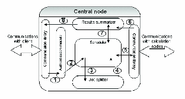

Figure 5: Workflow in the Central node. (1) job request from client is authenticated; (2) request is submitted to Scheduler; (3), (4) Scheduler asks Job Splitter for next chunk; (5) chunks are sent to Calculation node; (6) upon chunk completion, chunk results are submitted to Results Summarizer; (7) Results Summarizer checks with Scheduler, and if all chunks are finished, it submits results back to client.
Back to Article